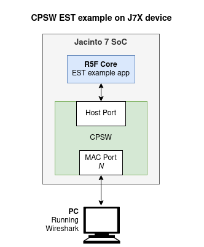
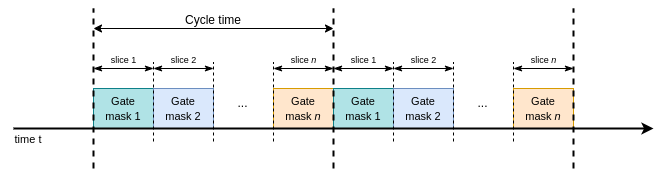

4.7.6.1.3.1. Enet EST Example¶
This example application illustrates the configuration and usage of 802.1Qbv Enhanced Scheduled Traffic (EST) with CPSW through Enet LLD. The example application opens one DMA TX channel and one DMA RX channel. The TX channel will be used to inject test packets into CPSW host port. The RX channel receives packets and just drops them as this example doesn’t focus on RX data path.
The application will also open the MAC port and will wait until the port gets link up with a remote partner (i.e. PC). The application then configures the same default EST schedule on the enabled MAC port.
The application uses ENET_MOD_TAS API for EST configuration
and ENET_DMA_API for packet transmission.
It’s worth noting that this example application does not integrate time synchronization. This is relevant when more than one MAC port is enabled and an external device (i.e. PC) is used to verify if the transmitted packets are meeting the programmed EST schedule (cycle time and time intervals), as CPSW CPTS internal clock might be off with respect to the external device’s clock.
4.7.6.1.3.1.1. Building EST example¶
To build the EST example app in PDK, use the following command:
$ make -s -j8 enet_est_test_freertos BOARD=<BOARD> CORE=<CORE>
The example app binary file can be found at the following location:
<pdk>/packages/ti/binary/enet_est_test_freertos/bin/<BOARD>/enet_est_test_freertos_<CORE>_release.xer5f
This command will build the EST example app (enet_est_test_freertos) using
the FreeRTOS operating system. Adjust the command according to your specific requirements,
such as selecting a different operating system or core if needed. By default, the release mode is built.
You can specify build mode by adding BUILD_PROFILE=debug in the instruction.
Configuration Parameters
Typically, the application’s parameters that a developer may want to change are:
MAC port number. User can select the MAC port number to test via CLI based on the board and core in enet_cpsw_est_main.c.
EST schedule. User can set different EST schedule by setting a new cycle time in testParams.portTestParams[0].tasControlList.cycleTime and/or new gate control list in testParams.portTestParams[n].tasControlList.gateCmdList and testParams.portTestParams[n].tasControlList.listLength. Note that the EST schedule can be different for each MAC port.
CPTS event pool size. User can increase the pool size to 32 or larger via
ENET_CFG_CPSW_CPTS_EVENTS_POOL_SIZEin enet_cfg.h if interested on verifying all timestamps generated for all TX test packets.
This application supports different MAC ports based on the core and board it is running.
Core |
MAC Ports |
|---|---|
mcu2_0 |
ENET_MAC_PORT_1 [RGMII] |
ENET_MAC_PORT_2 [QSGMII] |
|
mcu2_1 |
ENET_MAC_PORT_1 [RGMII] |
mcu1_0 |
4.7.6.1.3.1.2. Application functionality¶
The EST schedule programmed by this example application is shown below:
This EST schedule is 250 usecs long and is composed of 4 intervals, each with a gate mask that enables transmission of 2 priorities. There is no interval stretching or truncation in this sample schedule.
Each of the 8 gates (one per priority) can be in one of two states:
Open: Frames in the corresponding queue can be selected for transmission. This is represented by ‘o’ in the Gate Control column of previous table.
Closed: Frames in the corresponding queue are not selected for transmission. This is represented by ‘C’ in the Gate Control column.
The gate control list for the mentioned EST schedule will be as follows:
Gate Control
Time Interval
ooCCCCCC
62.5 usecs
CCooCCCC
62.5 usecs
CCCCooCC
62.5 usecs
CCCCCCoo
62.5 usecs
The priority being referred to in the EST schedule described above corresponds to the CPSW destination port hardware switch priority. For VLAN tagged packets that ingress through CPSW host port, the hardware switch priority can be determined by either the CPPI channel number (P0_RX_REMAP_VLAN = 0) or the packet priority value from the VLAN tag (P0_RX_REMAP_VLAN = 1).
The IOCTLs used to program the EST schedule are:
ENET_TAS_IOCTL_SET_STATEto set the EST state to RESET (ENET_TAS_RESET) before any other EST/TAS IOCTL. And subsequently, after the administrative list has been programmed, to set EST state to ENABLE (ENET_TAS_ENABLE).ENET_TAS_IOCTL_SET_ADMIN_LISTto program the default EST administrative control list. The administrative base time, cycle time and gate control list are passed via this IOCTL command.ENET_TAS_IOCTL_GET_OPER_LIST_STATUSis called as many times as needed to check if the operational list has been updated.
Additionally, the following getter IOCTLs are called for informational reasons:
ENET_TAS_IOCTL_GET_STATEto get the current EST/TAS state.ENET_TAS_IOCTL_GET_ADMIN_LISTto get the driver’s version of the administrative list after one has been programmed. The admin list is then printed to serial console.ENET_TAS_IOCTL_GET_OPER_LISTto get the driver’s version of the operational list after one has been programmed. The oper list is then printed to serial console.
4.7.6.1.3.1.3. EST Packet Timestamping¶
The example application configures the EST administrative base time to be equal to the current time + ENET_APP_EST_ADMIN_LIST_DELAY (2 secs). This is useful to normalize the timestamps of the transmitted packets and verify that they are being sent on the appropriate time intervals.
When enabled via serial console menu (option ‘t’), CPSW ESTF will be configured to generate timestamps on every express packet. Each timestamp generates a CPTS interrupt which the Enet LLD driver services, the driver copies the timestamp event information into a software pool where the application can then retrieve. This CPTS event pool is shared among all MAC ports.
The timestamp option in this example application works together with option ‘T’ which sents a short stream of test packets. At the end of the transmission, the application will retrieve the available timestamps and verify if they met the programmed EST schedule.
Packets are transmitted using regular Enet LLD’s EnetDma_submitTxPktQ() API.
The pool size determines the maximum number of events that the driver can store
until the application retrieves them. The default pool size is 32, but it’s
configurable via ENET_CFG_CPSW_CPTS_EVENTS_POOL_SIZE in enet_cfg.h.
The relevant IOCTLs used by this application for EST timestamping are:
CPSW_MACPORT_IOCTL_EST_ENABLE_TIMESTAMPto enable timestamping on a given MAC port. Application can choose the type of timestamping mode (i.e. timestamp all transmitted packets, timestamp only first packet in each interval, etc).CPSW_MACPORT_IOCTL_EST_DISABLE_TIMESTAMPto disable timestamping on a given MAC port.CPSW_CPTS_IOCTL_LOOKUP_EST_EVENTto retrieve timestamp events from the driver’s internal event pool. The application must specify the MAC port for which the events must be looked up in the event pool.
EST State Control
The following options are provided by the application to change the EST state on all enabled MAC ports:
Set EST state to ENABLE.
Set EST state to DISABLE.
Set EST state to RESET.
Miscellaneous Options
The following helper options are also provided in the application’s test menu:
Get current time
Print statistics
Print statistics
Stop the test
Print EST status
4.7.6.1.3.1.4. Application Flow¶
The most important steps related to the EST configuration performed by the application are shown in the following sequence diagram:

4.7.6.1.3.1.5. Running ENET EST example¶
The simplest test that one can run with the CPSW EST example consists of:
Enabling EST and programming a default EST schedule on the selected MAC port.
Sending test packets from example app with different priorities.
Verify that packets are transmitted within the time intervals corresponding to the packet priority.
After building the example, follow the given steps to run the test:
Launch a CCS debug session, load and run
enet_est_test_freertos_<CORE>_release.xer5fbinary file to the respective core in which the binary is built. Alternatively, the example application can be loaded using any other boot method such as MMC/SD.Logs will be printed in Main UART port 0 or MCU UART port 1 based on which core you are running the example. Below is an example of the log when running EST on J7200 on mcu2_0 core:
Binary: <pdk>/packages/ti/binary/enet_est_test_freertos/bin/j7200_evm/enet_est_test_freertos_mcu2_0_release.xer5f:
========================== Enet EST App ========================== Select peripheral type 1: CPSW_5G 1 Select MAC port 0: ENET_MAC_PORT_1 - Q/SGMII (based on which board is attached) 1: ENET_MAC_PORT_2 - RGMII (GESI) 0 EnetBoard_setupPorts: 4 of 4 ports configurations found Configuring SerDes lane 2 for QSGMII CPSW_5G Test on MAIN NAVSS Mdio_open: MDIO manual mode enabled EnetPhy_bindDriver: PHY 16: OUI:0001c1 Model:27 Ver:00 <-> 'vsc8514' : OK initQs() txFreePktInfoQ initialized with 128 pkts Port 1: Waiting for link up... CpswMacPort_checkSgmiiStatus: MAC 1: SGMII link parter config port: link up: 1-Gbps Full-Duplex Cpsw_handleLinkUp: Port 1: Link up: 1-Gbps Full-Duplex MAC Port 1: link up Port 1: Link is up TAS state is set to 2 MAC Port 1: suggested start time: 5590660154 MAC 1: Admin List ------------------------------------------- Gate mask=ooCCCCCC (0xc0), start=0 ns, end=62499 ns, dur=62500 ns Gate mask=CCooCCCC (0x30), start=62500 ns, end=124999 ns, dur=62500 ns Gate mask=CCCCooCC (0x0c), start=125000 ns, end=187499 ns, dur=62500 ns Gate mask=CCCCCCoo (0x03), start=187500 ns, end=249999 ns, dur=62500 ns Gate mask=CCCCCCCC (0x00), start=250000 ns, end=381063 ns, dur=131064 ns Cycle time=381064 ns Base time=5590660154 ns TAS state is set to 1 MAC 1: Oper List ------------------------------------------- Gate mask=ooCCCCCC (0xc0), start=0 ns, end=62503 ns, dur=62504 ns Gate mask=CCooCCCC (0x30), start=62504 ns, end=125007 ns, dur=62504 ns Gate mask=CCCCooCC (0x0c), start=125008 ns, end=187511 ns, dur=62504 ns Gate mask=CCCCCCoo (0x03), start=187512 ns, end=250015 ns, dur=62504 ns Gate mask=CCCCCCCC (0x00), start=250016 ns, end=381079 ns, dur=131064 ns Cycle time=381064 ns Base time=5590660154 ns MAC addr: 70:ff:76:1d:88:4a CPSW EST Test Menu: EST control list tests: 'T' - Send test packets from host port EST state: 'E' - Set EST state to 'ENABLE' 'D' - Set EST state to 'DISABLE' 'R' - Set EST state to 'RESET' Others: 'c' - Get current time 't' - Toggle printing timestamps 'S' - Print EST status 's' - Print statistics 'r' - Reset statistics 'x' - Stop the test 'h' - Show this menu Enable timestamp printing MAC 1: EST timestamp verification ------------------------------------------- Programmed EST time intervals: Gate mask=ooCCCCCC (0xc0), start=0 ns, end=62503 ns Gate mask=CCooCCCC (0x30), start=62504 ns, end=125007 ns Gate mask=CCCCooCC (0x0c), start=125008 ns, end=187511 ns Gate mask=CCCCCCoo (0x03), start=187512 ns, end=250015 ns Gate mask=CCCCCCCC (0x00), start=250016 ns, end=381064 ns Retrieved EST timestamps: Note: last 8 timestamps per port are stored with current CPTS pool size (128) MAC Port 1: packet with seqId 1 priority 7 timestamp 7249051028 (norm 4352, 346) interval (0, 62503) : PASS MAC Port 1: packet with seqId 2 priority 6 timestamp 7249051732 (norm 4352, 1050) interval (0, 62503) : PASS MAC Port 1: packet with seqId 3 priority 5 timestamp 7249113532 (norm 4352, 62850) interval (62504, 125007) : PASS MAC Port 1: packet with seqId 4 priority 4 timestamp 7249114236 (norm 4352, 63554) interval (62504, 125007) : PASS MAC Port 1: packet with seqId 5 priority 3 timestamp 7249176044 (norm 4352, 125362) interval (125008, 187511) : PASS MAC Port 1: packet with seqId 6 priority 2 timestamp 7249176748 (norm 4352, 126066) interval (125008, 187511) : PASS MAC Port 1: packet with seqId 7 priority 1 timestamp 7249238548 (norm 4352, 187866) interval (187512, 250015) : PASS MAC Port 1: packet with seqId 8 priority 0 timestamp 7249239252 (norm 4352, 188570) interval (187512, 250015) : PASS EST Self Test Result: PASS
Verification
This example supports single Macport at a time right now. By running the example and mentioned above we can check if the traffic is sent according to the EST schedule or not by retreiving and checking CPTS hardware timestamp events. If “EST Self Test Result: PASS” is printed that means the test has passed by sending the traffic in the scheduled time intervals.